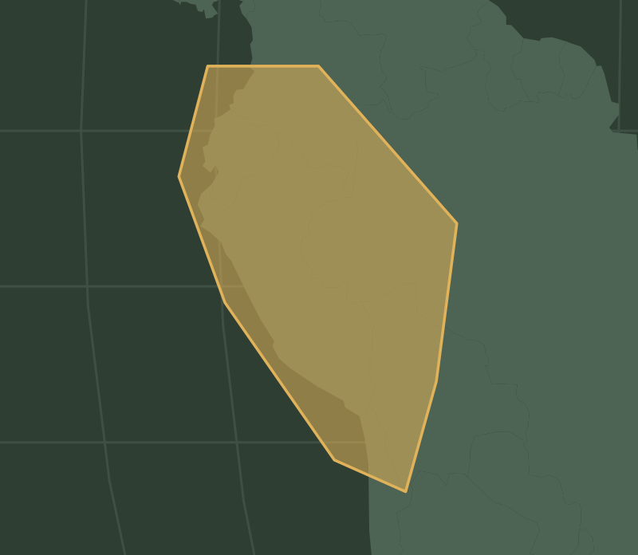

Planta · Eritroxiláceas · Andes y Amazonia
Coca
Erythroxylum coca Lam.
Un arbusto cultivado por los pueblos andinos y amazónicos durante milenios con fines nutritivos, medicinales, ceremoniales y sociales. Su hoja, masticada o en infusión, tiene una historia propia, distinta de la del alcaloide aislado.1237
También se llamacoca · hoja de coca · mama coca · kuka · Erythroxylum coca · Erythroxylum novogranatense
- Qué es
- Arbusto cultivado de la familia de las eritroxiláceas
- Territorio
- Andes y Amazonia
- Parte usada
- La hoja
- Principios activos
- Alcaloides tropánicos, entre ellos la cocaína en la hoja
- Empieza y dura
- El efecto de la hoja es suave y de absorción lenta
- Quién guarda su memoria
- Pueblos andinos y amazónicos
Botánica
Cuatro cultivos y dos especies principales
La coca es cualquiera de las cuatro plantas cultivadas de la familia de las eritroxiláceas: Erythroxylum coca var. coca y var. ipadu, y E. novogranatense var. novogranatense y var. truxillense.5
El género Erythroxylum incluye unas 230 especies repartidas por los trópicos, y dos de ellas, E. coca y E. novogranatense, son especialmente destacadas.2 Los primeros botánicos creyeron que todas las cocas eran la misma especie; después se vio que había dos especies domesticadas.4
Es una de las plantas medicinales cultivadas más antiguas, con evidencia de uso de al menos 8000 años en Sudamérica.2
- Familia
- Erythroxylaceae
- Especies cultivadas
- E. coca y E. novogranatense
- Variedades
- Cuatro
- Parte usada
- La hoja
Memoria y tradición
La hoja sagrada de los Andes
Los productos de la hoja de coca son parte integral de la vida de los pueblos andinos, tanto desde la perspectiva cultural como desde la medicina tradicional.1
Hay arqueólogos que han hallado evidencia de que se masticaban hojas de coca en la costa del Pacífico del actual Perú antes del 5000 a. C.3
Tradicionalmente, en las culturas andinas las hojas de coca se han usado con fines medicinales, nutritivos, religiosos y sociales, como estimulante, remedio, herramienta espiritual y sustento, sobre todo masticadas o en infusión.5
Los españoles desaprobaron la coca e intentaron erradicarla, sin éxito; hoy el masticado sigue siendo casi universal en las tierras altas y no solo como ayuda para el trabajo duro.3
El uso más común, antiguo y moderno, de la coca entre los pueblos nativos es masticar las hojas.4
En el tiempo
Evidencia más antigua de uso en Sudamérica.2
Masticado en la costa peruana.3
Los españoles intentan erradicarla sin lograrlo.3
Sus nombres
- coca
- del quechua kuka
- chacchar
- masticar la hoja, de uso andino
- hoja de coca
- la hoja, distinta de la cocaína
La literatura insiste en diferenciar el uso tradicional y cultural de la hoja del uso ilegal de la cocaína.6
Territorio y cuidado
Una planta de la ladera andina y de la selva

Qué ayuda
- Distinguir siempre la hoja del alcaloide aislado.
- Escuchar a los pueblos que la usan y cultivan.
- Informarse con fuentes que respeten su contexto cultural.
Qué contiene
Alcaloides en la hoja
Las hojas contienen cocaína, que actúa como estimulante suave cuando se mastica o se toma en infusión; este uso tradicional implica una absorción más lenta que la de la cocaína purificada.5
Las temperaturas más bajas parecen afectar de forma adversa al contenido de alcaloides en todos los cultivares estudiados.2
La biosíntesis de alcaloides tropánicos en E. coca es un tema de investigación propio.2
Presente en la hoja; su efecto en la hoja masticada es suave y lento.[5]
La experiencia
Un estimulante suave y un compañero de trabajo
La hoja se masca colocándola en la boca; su uso es social, ritual, medicinal y laboral a la vez.4
No es una experiencia de visión: es parte de la vida cotidiana y de los rituales andinos.13
Esquema orientativo: cambia con la preparación, la cantidad y la persona.
Investigación
Qué se ha estudiado
Hay revisiones sobre la historia y el significado médico de la tradición andina, que examinan la toxicología de la coca entera y sus aplicaciones medicinales pasadas, presentes y futuras.1
El trabajo de Plowman de 1984 sobre la etnobotánica de la coca es una referencia clásica.8
Otra revisión recoge los usos tradicionales y los posibles efectos adversos de las formas de uso, y subraya la diferencia entre el uso tradicional y cultural y el de la cocaína.6
Alcance de estos datosHay mucha literatura etnobotánica y médica sobre la hoja; los debates sobre su regulación son un campo aparte.
Con cuidado
Lo que conviene saber antes
Para seguir
Libros y medicinas emparentadas
Fuentes
De dónde sale cada dato
- Biondich AS, Joslin JD. Coca: the history and medical significance of an ancient Andean tradition. Emerg Med Int. 2016;2016:4048764. doi:10.1155/2016/4048764.
- Restrepo DA, Saenz E, Jara-Muñoz OA et al. Erythroxylum in focus: an interdisciplinary review of an overlooked genus. Molecules. 2019;24(20):3788. doi:10.3390/molecules24203788.
- JSTOR Daily. What coca means in Peru. daily.jstor.org/what-coca-means-in-peru.
- Revisión sobre la coca: especies domesticadas y uso. core.ac.uk/download/60545824.pdf.
- Wikipedia. «Coca». en.wikipedia.org/wiki/Coca (consultada el 24-11-2026).
- Revisión de la hoja de coca: usos tradicionales, efectos adversos y marco legal. dialnet.unirioja.es/descarga/articulo/9586014.pdf.
- ICEERS. Coca. iceers.org/en/tag/coca.
- Plowman T. The ethnobotany of coca (Erythroxylum spp.). Advances in Economic Botany. 1984;1:62-111.
- Mapa APDER, con datos de Natural Earth · dominio público
- Dibujos de moléculas APDER
Última revisión: 24 de noviembre de 2026. Si ves un error, escríbenos a info@apder.org.